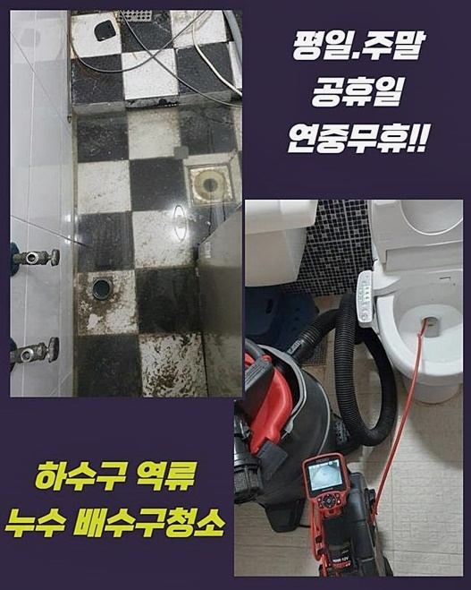
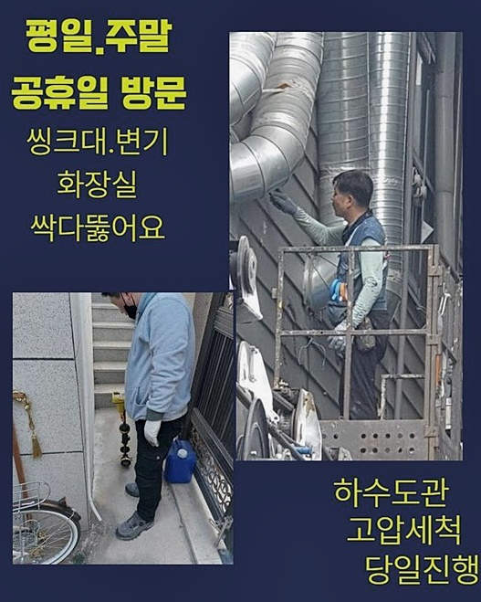
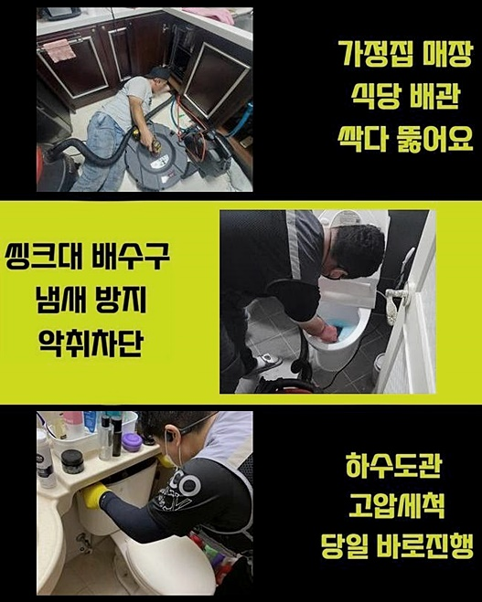
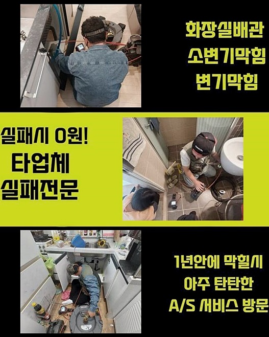
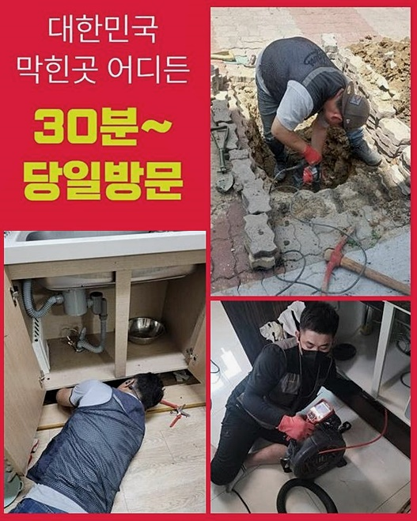
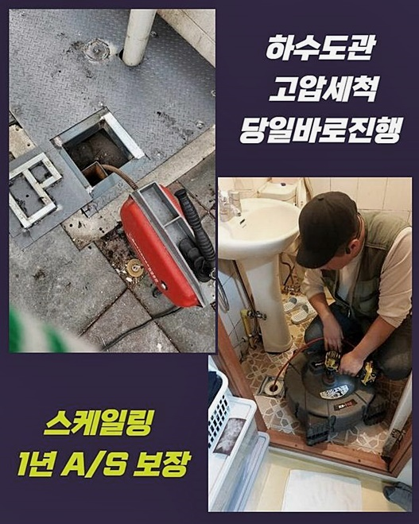

🏠 의정부 민락동변기역류 가능동 집수정청소 수리업체
용인시 처인구 배관막힘 전문 시공 후기

📋 작업 개요
- 위치: 용인시 처인구, 수원시 영통구, 화성시 동탄
- 서비스 유형: 배관막힘, 고압세척, 내시경점검
- 작업 일시:
- 업체명: 하수구수사대 (010-5615-2118)
🔍 문제 상황
의정부 민락동변기역류 가능동 집수정청소 수리업체
하수배관에 누적된 기름덩어리로 생긴 배수문제들과 욕실내의 배수파이프에서 폐수가 올라오는 현상을 다루는 절차들을 이미지를 곁들여 설명해드리려고합니다
배수파이프 역행상황과 하수도관막힘은 평소생활에 커다란 불편을 주는 주된 이슈들 중 하나에 포함됩니다
싱크대 배수구와 세면도기부터 욕실공간까지 물이 통과하는 각 부분들에서 이와같은 현상이 일어날 확률들이 큽니다
많은분들이 인터넷 서치나 아는사람들의 도움을 받아 적은가격의 기구를 사용해 오물 청소나 화학제품을 이용하여 다양한 방안들을 실행합니다
하지만 이와같은 수단들이 배수 설비에 역으로 피해들을 유발할 수 있다는 점을 유념하시기 바랍니다
실무에서 전용 기기를 활용하는 수리업체들도 과한 하수구 클리닝으로 배수시스템에 손상들을 입히게되는 사례들을 보았습니다
얼마전 한 의뢰자분께서 이런 작업들을 스스로 시행한 후 결국에는 저희에게 지원을 부탁하셨어요
이와 같은 경우를 보면 하수도 막힘현상의 수리를 하려면 전문적인 능력과 참신한 해결수단의 필요성을 확인할 수 있어요
배수구막힘 현장상황에서 우리 전문팀이 욕실 배수관의 막힌 문제를 풀기 위하여 집결하였습니다
폐수 하수관으로 흘려보내면 역류로 밀려오는 불순물이 관찰되었습니다

🔎 원인 분석
💡 전문가 진단: 정밀 진단 장비를 사용하여 슬러지의 고착 여부를 판명하고 타격/세척 작업을 실시했습니다.
이 문제는 응고된 기름들과 여러 이물질들이 파이프의 연결지점 또는 비정상적인 경사에 쌓이게 되어 일어났습니다
그렇지만 걱정하지 않아도 됩니다 우리는 이러한 타입의 배수시스템 문제들을 대처하기 위해 최상급의 기구와 숙련된 기술을 가지고 있으므로 의뢰자분의 어려움을 해소해드릴 수 있습니다
배수구 속의 기름과 오염물을 제거하면 또 다시 역류되는 문제들은 생기지 않아 하수관 막힘이슈를 완벽하게 해결가능합니다
이런 배수구 문제들을 처리하기 위한 대응 방안들을 설명해드릴게요
최초의 접근 방식은 스프링 청소기를 사용하는 방식입니다
막혀버린 하수관에 전동 스프링 장치를 삽입한 후 전원을 켜서 하수구 안쪽의 기름 찌꺼기들을 분쇄한 후 깨끗한 물을 흘려서 바깥으로 제거합니다
하수관 둘레에 잔존하는 미세한 부스러기들을 깨끗하게 하려면 석션기구를 배수관에 넣고 반복 실행하면서 세척합니다
또 다른 방법들로는 샤프트라는 전문장비를 활용하는 것입니다
플렉스 샤프트장비는 유연함이 탁월하여 구부러진 하수관도 문제없이 도달하여 기름 덩어리를 분쇄하고 석션장비로 수 회 흡입하여 배관안의 이물질을 말끔히 청소해드립니다
깨끗한 물을 흘려서 잔여 불순물들을 없앤뒤 배수관을 청결하게 관리하여 드립니다
하수도 깊숙이 잔재한 녹지 않는 모래같은 잔여물은 고압력의 물세척 과정을 통해 정리하여 처리할 수 있습니다
하수관에 들어간 귀중한 물건이 있다거나 하수관이 오래돼서 휘어지거나 파손된 때에는 배수파이프를 정비하여 원래 모습으로 복구합니다

🔧 작업 과정
하수관막힘 상황을 해소하기 위해서 첫 단계로 막혀있는 곳을 검토하고 높은 강도의 석션이 가능한 장치를 이용해 하수관 속 오일 및 오염물을 빨아들이는 방식으로 처리했습니다
석션기구는 약한 배수장애 해소에 효과를 볼 수 있지만 강한 장애물과 하수도 깊숙한지점의 찌꺼기를 처리하는데 있어서는 한계가 따르기 때문에 이런경우엔 보완할 수 있는 기계를 활용할수 있습니다
한 건물 작업지에서는 막힘현상을 장기간 방치한 결과 극악의 수준에 다다랐고 석션처리를 통해 처리할 수 없는 상태였습니다
그러므로 하수관 내부를 재차 검토하고 샤프트 장치로 수리하기로 판단을 내렸습니다
하수도관막힘은 상가의 하수관 설비에 커다란 반향을 일으키는 현상으로 막힌 지점으로 인해서 물이 되돌아 나오거나 역한 냄새가나므로 위생문제를 유발합니다
문제작업지에서는 드릴 타입의 샤프트라는 전문장비를 활용하여 고속으로 돌아가는 체인들이 하수구 안의 찌꺼기들을 분쇄하고 제거 과정들을 수행했습니다
상가 하수관막힘 정비는 간단한 일이 아닌 발생 원인들을 상세히 검토하여 근원적인 배수 설비 장애를 고쳐야합니다
그렇지 않을경우 배수파이프가 다시금 막히게 되거나 고약한 냄새가 악화 될 수 있습니다
우리는 여러가지 최신 설비를 보유한 수리 전문 팀으로 숙련된 전문가가 있어서 이슈를 효과적으로 처리할 수 있게 됩니다
하수관막힘과 배수관 역류현상은 평상시에 종종 발생하지만 배수설비 장애를 막기위해서는 문제요인을 분석하고 조심스럽게 다루는 것이 핵심입니다
배수구외에도 물이 지나가는 대부분의 영역은 계획적인 세척을 진행해 문제들이 나타나지 않게 관리하는게 권장됩니다
스케일링 클리닝을 위해 흡입기구와 샤프트기기를 활용해 하수구 속의 이물질들을 제거하고 배관용 내시경장치를 이용해 배수관 안쪽을 영상으로 확인하면서 남은 이물질이 있는지 조사하였습니다
건물에서 나타나는 배수장애를 자가로 없애보려는 애써보는 것은 받아들일 수 있습니다
다만 이 단계에서 갑작스럽게 추가적인 문제현상이 생길 수 있는 요소들을 고려하면 전문인의 지원을 의뢰하는 것이 안정성이 높은 선택입니다
경미한 현상이라면 약제나 도구들을 사용해 본인이 해결할 수도 있죠
이런 상황에서 확인해야하는 것은 막힘의 이유와 상태를 정확하게 이해하고 구매한 기구나 화학제품을 적절히 이용해야합니다
잘못 다루면 하수관로나 배수구에 손상들을 발생시키게 됩니다
그렇지만 이런방법들이 실패하게 되더라도 걱정할 필요가 없습니다
전문 수리공은 이러한 어려움을 빠르고 효과적으로 처리할 역량이 있으며 그리하여 시간과 수리비를 아낄수 있으며 배수관의 막힘이나 균열로 초래될 수 있는 심각한 상황을 미리 피하게 됩니다


✅ 작업 완료
자신이 시도중에 배수관을 훼손할 상황을 고려하여 내시경기기 점검을 진행하는 것이 효과적인 해결책입니다
냄새문제를 해결하기위해 성능이 뛰어난 하수구트랩을 설치해 주었습니다
그리고 화장실에서 우리 팀 전문가가 물을 틀어 배수장치가 잘 기능하는지 검사하고 물이 순조롭게 빠지는 것을 보았습니다
화장실의 하수관 악취 제거 금액은 현장 조건과 막힌 상태 및 악취의 심각도를 진단 후 변동되기 때문에 저희전문가는 문제현장을 점검하고 구체적인 비용을 알려드립니다
우리 전문 업체는 작업현장 방문시 추가 비용을 요구하지 않으므로 고객님들은 추가비용을 우려할 필요가 없어요



⚠️ 하수구 배관 막힘 예방 및 관리 가이드
- ✅ 머리카락, 비닐, 물티슈 등 물에 분해되지 않는 이물질은 절대 흘려보내지 마세요.
- ✅ 기름기 많은 식기는 설거지 전 키친타올로 먼저 기름때를 닦아내세요.
- ✅ 주기적으로 배수구에 뜨거운 물을 가득 부어주어 유지방 고착을 방지하세요.
- ✅ 작업 후 1년 이내 재발 시 무상 A/S 보증 서비스를 제공합니다.
💡 핵심 정리
- 확실한 장비 작업(내시경 점검 및 샤프트 스케일링)으로 원인을 뿌리 뽑습니다.
- 작업 후 1년 이내에 동일한 부위 재발 시 100% 무상 A/S 서비스를 보장합니다.
- 서울 · 경기 · 인천 전 지역에 24시간 언제든 긴급 출동할 수 있도록 항시 대기 중입니다.
❓ 자주 묻는 질문 (FAQ)
🚨 용인시 처인구 배관막힘 문제로 고민이신가요?
정확한 원인 진단과 확실한 시공으로 재발 없는 해결을 약속드립니다.
24시간 긴급 출동 | 서울 · 경기 · 인천 전지역 | 1년 내 재발 시 무상 A/S